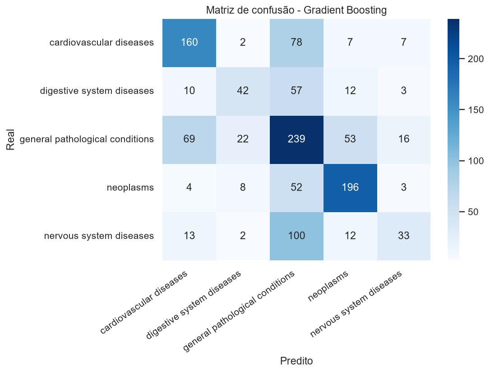
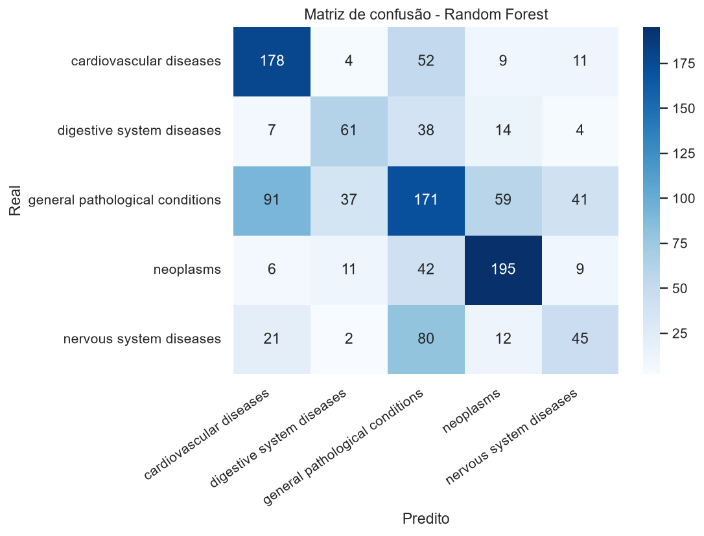
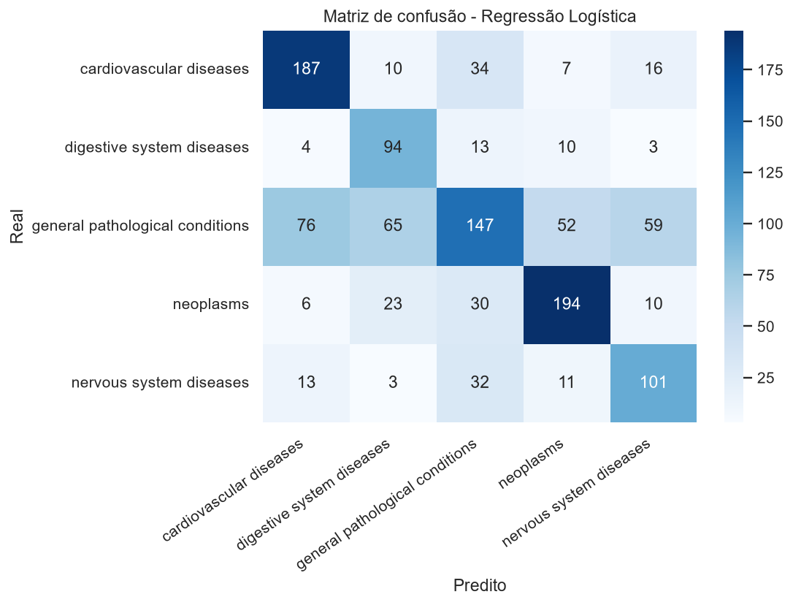
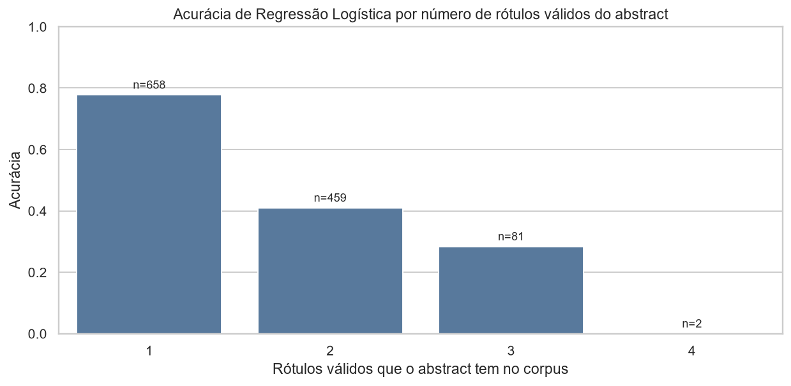

Relatório exploratório. Complementa o relatório de EDA em eda_nlp_hospital.html. Não representa o pipeline de produção nem validação clínica.
random_state=42.max_features=5000, ngram_range=(1, 2), ajustado somente no treino.| modelo | weighted_precision | weighted_recall | weighted_f1 | macro_precision | macro_recall | macro_f1 | recall_medio_classes_minoritarias | observacao_classes_minoritarias |
|---|---|---|---|---|---|---|---|---|
| Regressão Logística | 0.6056 | 0.6025 | 0.5923 | 0.5905 | 0.6463 | 0.6064 | 0.6947 | recall minoritário próximo da média ponderada no split avaliado |
| Random Forest | 0.5300 | 0.5417 | 0.5327 | 0.5296 | 0.5288 | 0.5254 | 0.3866 | acompanhar de perto; métrica ponderada pode mascarar desempenho |
| Gradient Boosting | 0.5649 | 0.5583 | 0.5459 | 0.5729 | 0.5038 | 0.5167 | 0.2725 | acompanhar de perto; métrica ponderada pode mascarar desempenho |



Modelo candidato neste split: Regressão Logística, com macro-F1 de 0.6064. A justificativa considera macro-F1 e macro-recall, para reduzir o risco de métricas ponderadas esconderem desempenho ruim nas classes menores.
O corpus é multirrótulo achatado (ver relatório de EDA). Isso limita estruturalmente qualquer modelo que responda um único rótulo por abstract:
Este teto é do enunciado single-label testado neste notebook, não do domínio: o pipeline de produção o contorna reformulando o problema como multilabel (seção 5).
| rotulos_validos_no_corpus | acuracia | abstracts |
|---|---|---|
| 1 | 0.778 | 658 |
| 2 | 0.410 | 459 |
| 3 | 0.284 | 81 |
| 4 | 0.000 | 2 |

Esta arquitetura foi a proposta exploratória deste notebook. O pipeline de produção seguiu a mesma espinha dorsal (TF-IDF + classificador linear + API + ONNX), mas com o classificador envolvido por um OneVsRestClassifier multilabel — por isso a etapa "Saída" abaixo já reflete um conjunto de rótulos por threshold, não uma única classe.
| etapa | descricao |
|---|---|
| Entrada | Texto médico digitado, enviado por formulário ou recebido por integração. |
| Pré-processamento | Normalização, limpeza leve, stopwords e lematização documentada. |
| Vetorização | TF-IDF (max_features=5000, 1-2 gramas) ajustado somente no treino e persistido com o modelo. |
| Classificador | Baseline candidato: Regressão Logística, sujeito a validação cruzada e comparação futura. |
| Saída | Conjunto de rótulos cujo score cruza um threshold (ex.: 0.5), cada categoria avaliada de forma independente — não apenas a classe de maior score. |
| Endpoint futuro | API REST para predição em tempo real, com validação de entrada e monitoramento. |
| Refatoração antes de produção | Separar pipeline, versionar artefatos, testar, monitorar drift e revisar riscos clínicos. |
| biblioteca | versao |
|---|---|
| python | 3.11 |
| pandas | 2.3.3 |
| numpy | 1.26.4 |
| scikit-learn | 1.7.2 |
| matplotlib | 3.11.1 |
| seaborn | 0.13.2 |
| nltk | 3.10.3 |
| spaCy | 3.7.5 |
| spaCy model | en_core_web_sm |
| biblioteca | uso |
|---|---|
| pandas | ingestão offline e auditoria de dados |
| scikit-learn | pipeline TF-IDF + classificador baseline |
| joblib | persistência do pipeline treinado |
| FastAPI | endpoint de predição |
| prometheus-client | métricas de API em produção |
| onnxruntime | redução de latência do classificador |
docs/plano_melhoria_f1.md; a direção que de fato foi seguida foi reformular o problema como multilabel (OneVsRestClassifier), não buscar um modelo maior para o subconjunto de rótulo único — ver 01_eda_nlp_hospital.ipynb seção 7 e src/models/classifier.py.